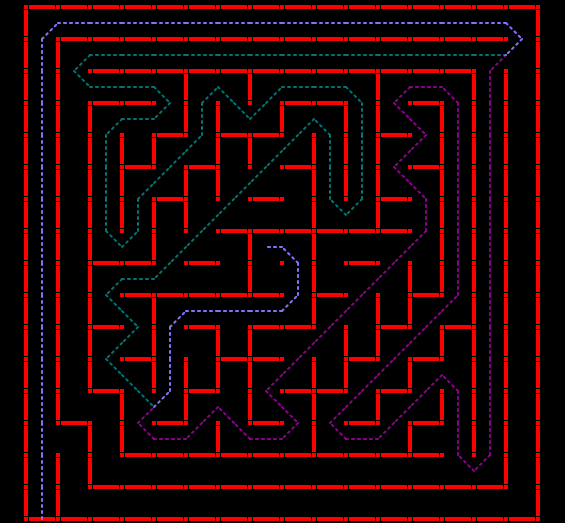

Problem Statement
A robot is placed in the far corner of a maze consisting of approx 30cm square segments. Junctions are akin to standard mazes – dead ends, T-intersections, right and left hand turns, etc. In the dead center of the maze, is an open area, 2 segments wide and 2 segments long. This central area is positioned in such a way that left-turn only or right-turn only robots can never reach it. The goal is to reach the center of the maze in the fastest time possible, across several attempts.


Event Description: Maze Runner
Bot Specification:
- At any point of time and any configuration of the bot, it should fit inside a box with dimensions of 20cm*20cm*20cm (l*b*h)
- Power supply should be on-board and maximum voltage between any two points on the circuit at any given time should not exceed 12V DC, 1.5A
- Bot should be fully autonomous
- Maximum of 4 sensors can be used on the robot
Arena Specifications:
- The maze is composed of multiples of a 30 cm x 30 cm unit square. The walls of the maze are 25 cm high and 3 cm thick (assume 10% tolerance for mazes). Thus, the internal navigable area within a square is 27cm, not 30cm. The maze comprises up to 8x 8 unit squares, The outside wall encloses the entire maze
- The sides of the maze walls are white, and the floor is black. The maze is made of wood, finished with non-gloss paint
- WARNING: Do not assume the walls are consistently white, or that the floor is consistently black. Fading may occur; parts from different mazes may be used. Do not assume the floor provides a given amount of friction. It is simply painted plywood and may be quite slick. There may be a seam between the two sheets on which any low-hanging parts of a robot may snag.
- The start of the maze is located at one of the four corners. The start square is bounded on three sides by walls. The start line is located between the first and its second squares. That is, as the robot exits the corner square, the time starts. The destination goal is the four cells at the center of the maze. The destination square has only one entrance.
- Multiple paths to the destination square are allowed and are to be expected. The destination square will be positioned so that a wall-hugging robot will NOT be able to find it.
Rules:
- Participants should posses a valid identity card from their respective Institutions
- The bot is not allocated any time to access the maze prior to their first run.
- Contestants have 10 minutes in total to complete as many runs as they wish.
- Any time used to adjust a robot between runs is included in the 10 minutes.
- Each run (from the start cell to the center zone) in which a robot successfully reaches the destination square is given a run time.
- The minimum run time shall be the robot’s official time.
- First prize goes to the robot with the shortest official time. Second prize to the next shortest, and so on.
- NOTE, again, that the 10-minute timer continues even between runs. Robots that do not enter the center square will be ranked by the maximum number of cells they consecutively transverse without being touched. All robots who enter the center square within their 10 minute allotment are ranked higher than those who do not enter the center square. If a robot is in mid-run when the ten minute total time elapses, that attempt is finished and does not count. If no robots (or less than 3) finish their runs in under ten minutes, ranking will be determined by the sole discretion of the judges. Robots that do not enter the center square will be ranked by the maximum number of cells they consecutively transverse without being touched. However, judges are not required to give any rankings to robots who do not finish, and may declare no winners or declare less than 3 winners at their discretion.
- Two timers are used for each contestant. One for the ten-minute total time, and a separate timer for each run within the total time.
- The initial run shall be made from a random one of the four possible starting squares. Following runs within the 10 minutes allowed shall all be from the same starting square as the first run.
- The operator may abort a run at any time. If an operator touches the bot during a run, it is deemed aborted, and the robot must be removed from the maze.
- If a robot has already crossed the finish line, it may be removed at any time without affecting the run time of that run. If a robot is placed back in the maze for another run, a one-time penalty of 30 seconds will be added to the robot’s best time.
- After the maze is disclosed, the operator shall not feed information on the maze into the The bot however, switch positions may be changed for the purpose of changing programs within the robot (changing algorithms is allowed. Entering info on the maze is not allowed and does not constitute “changing algorithms".).
- BEWARE: Do not make any assumptions about the amount of sunlight, incandescent light, or fluorescent light that may be present at the contest site.
- The run timer will start when front edge of the robot crosses the start line and stops when the front edge of the robot crosses the finish line. The start line is at the boundary between the starting unit square and the next unit square clockwise. The finish line is at the entrance to the destination square.
- Every time the robot leaves the start square, a new run begins. If the robot has not entered the destination square, the previous run is aborted. For example, if a robot re-enters the start square (before entering the destination square) on a run, that run is aborted, and a new run will be deemed begun, with a new time that starts when the starting square is exited.
- The robot may, after reaching the destination square, continue to navigate the maze, for as long as their total maze time allows.
- If a robot continues to navigate the maze after reaching the destination square, the time taken will not count toward any run. Of course, the 10-minute timer continues to run. When the robot next leaves the start square, a new run will start. Thus, a robot may and should make several runs without being touched by the operator. It should make its own way back to the beginning to do so.
- The judges reserve the right to ask the operator for an explanation of the The bot. The judges also reserve the right to stop a run, declare disqualification, or give instructions as appropriate (e.g., if the structure of the maze is jeopardized by continuing operation of the robot).
- A contestant may not feed information on the maze to the The bot.
- However, contestants are allowed to:
- Change switch settings (e.g. to change algorithms (for example from left-turning to right turning – again, entering data on maze size or content is NOT inclusive of this rule.)
- Replace batteries between runs
- Adjust sensors
- Change speed settings
- Make repairs
- However, a contestant may not alter a robot in a manner that alters its weight (e.g. removal of a bulky sensor array or switching to lighter batteries to get better speed after mapping the maze is not allowed). The judges shall arbitrate.
- All robots, whether or not they have competed in previous contests, compete on an equal basis. All robots must be presented to the judges by the original design team, which must meet all other qualifications. First prize will go to that robot which travels from the start square to the destination square in the least amount of time. Second and third prizes will be awarded to the second and third fastest respectively.
- The track dimensions are subjective to change.There will be a tolerance of 10% given to the bot dimensions.
- If there are less than 5 teams registered , event will be cancelled.
- The decision of the Judges will be final.Any dispute will lead to direct disqualification.
- If there are less than 5 teams registered , event will be cancelled.